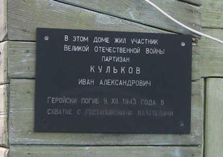

Ivan Aleksandrovich Kulkov est né en 1923 dans le village de Dubovy Umet, à trente kilomètres de Samara. À l'école déjà, il rêvait de devenir pilote dans l’Arctique. En mars 1942, Kulkov est enrôlé dans l'armée et débute une formation de défense anti-aérienne et d’opérateur radio. En 1943, il est transféré à Stalingrad. Lors d’un combat aérien au-dessus du territoire ennemi, son avion est abattu. Ivan ne donne aucun signe de vie et est déclaré « porté disparu ». En fait, Kulkov, grièvement blessé a été capturé. Il est fait prisonnier et transféré dans plusieurs camps d’où il essaye toujours de fuir, sans jamais désespérer . Par la suite, il se retrouve dans une mine belge à Winterslag (Province de Limbourg, n.d.t), d'où il réussit enfin à s'échapper.
Ivan Kulkov (à gauche) est né dans une famille paysanne
Des mineurs belges le recueillent et lui expliquent comment rejoindre les groupes de partisans dans le sud des Ardennes. Kulkov s’était évadé du camp avec Dmitry Danelyuk (Dremlyuk). Dans les Ardennes, les fugitifs rencontrent le résistant communiste belge Joseph Piron, machiniste de la locomotive grâce à laquelle ils rejoignent les maquisards.
Kulkov et Danelyuk sont entrés dans un détachement dirigé par le communiste Jean-François Collard, dans lequel ils ont rencontré leur compatriote, Alexei Devyatkin, un ancien mécanicien du District voisin de Bezenchuk, dans la région de Kuibyshev. Dans une autre région des Ardennes, le détachement d'Evgeni Dotsenko a également combattu à leurs côtés.
Les partisans ont organisé des attaques ponctuelles contre les troupes nazies, mené des activités subversives, saboté des trains, fait sauter des ponts et des entrepôts. Même les partisans expérimentés admirent le courage et la détermination d'Ivan Kulkov face à l'ennemi. La Gestapo, à son tour, en vient à craindre « Ivan le Russe » et promet une forte récompense pour sa capture.
Le 9 décembre 1943, Kulkov, Dremlyuk et un partisan belge font sauter le pont de chemin de fer via lequel les nazis vont passer avec un convoi militaire. Les partisans prennent leurs positions et observent le détachement allemand. Le soir-même, Ivan, muni de faux papiers, se retrouve face à l’ennemi. Dremlyuk et les Belges, en embuscade, entendent les coups de feu. Ils se précipitent à la rescousse et liquident une partie du détachement allemand, mais Ivan ne survit pas à ses blessures. Il n’a que vingt ans.
La mère d'Ivan Kulkov, Anna Gavrilovna, attendra son fils toute sa vie durant. Chacun espérait recevoir ce tant attendu signe de son fils qui apaiserait son cœur maternel. En 1946, elle reçoit un avis disant que Ivan Aleksandrovich Kulkov est porté disparu. Des années plus tard, Anna Gavrilovna reçoit une lettre de Belgique détaillant toutes les péripéties et les exploits de son fils, ainsi que les circonstances de sa mort. Dans un courrier ultérieur, elle apprend l’existence de la sépulture et du monument dédié à Ivan, installé par les habitants de la localité de Trois-Ponts. Sur la plaque de la sépulture en français et en russe, il est écrit: « ci-git le vaillant Fils des Républiques soviétiques socialistes Kulikov (sic, n.d.t.) Ivan, partisan russe né à Kouïbychev (nom de Samara, 1935-1991, n.d.t.) en 1924, tué tragiquement le 9 décembre 1943 dans l’exécution d’une mission de Partisans.
Dmitry Dremyuk, qui a réussi à s'échapper, a fait tous les efforts après la guerre pour ne pas laisser son camarade Ivan oublié. Il a organisé une collecte de fonds pour le monument à un ami déchu. Erigé par les habitants. La tombe de Kulkov à Trois-Ponts est toujours entretenue et vient honorer sa mémoire.
Dans son village natal, Dubovy Umet, une rue a été baptisée du nom d'Ivan Kulkov et une plaque commémorative a été apposée sur la façade de sa maison.
Maintenant, son neveu, Vladislav Viktorovich, veille à ce que les villageois n'oublient pas leur héros. En fait, les gens en savent très peu sur Ivan, et ce uniquement sur le témoignage de Dmitry Dremlyuk (ainsi que Joseph Piron jr., fils du résistant.N.d.t.)
Le nom d'Ivan Kulkov est parmi les héros de ses compatriotes au mémorial en l'honneur de la Grande Guerre patriotique dans le village de Dubovy Umet. Photo: Ksenia TIMOFEEVA
Le 27 juillet, une délégation du Centre Russe pour la Science et la Culture (RCSC) à Bruxelles a visité la commune de Trois-Pont, située dans la province de Liège. Cette commune contient la tombe du partisan soviétique Ivan Kulkov
Par conséquent, notre génération a pour tâche d'empêcher ces grands noms de rester inconnus, de ne pas les laisser tomber dans l’oubli. C'est le moins que nous puissions faire pour les héros de la guerre qui nous ont offert une vie sereine.
U.A.B.
NOTES ET RÉFÉRENCES
Sources : Article d'Igor Grebtsov pour « la Pravda » (2015, Гребцов И. Именем сына // газета Правда // Режим доступа: https://kprf.ru/pravda/issues/2015/4/article-50146/.
Article de George Portnov pour « Komsomolskaya Pravda » (2015, Портнов Г. // газета Комсомольская правда // Режим доступа: https://www.kuban.kp.ru/daily/26360.5/3242105/).
Partager cette page